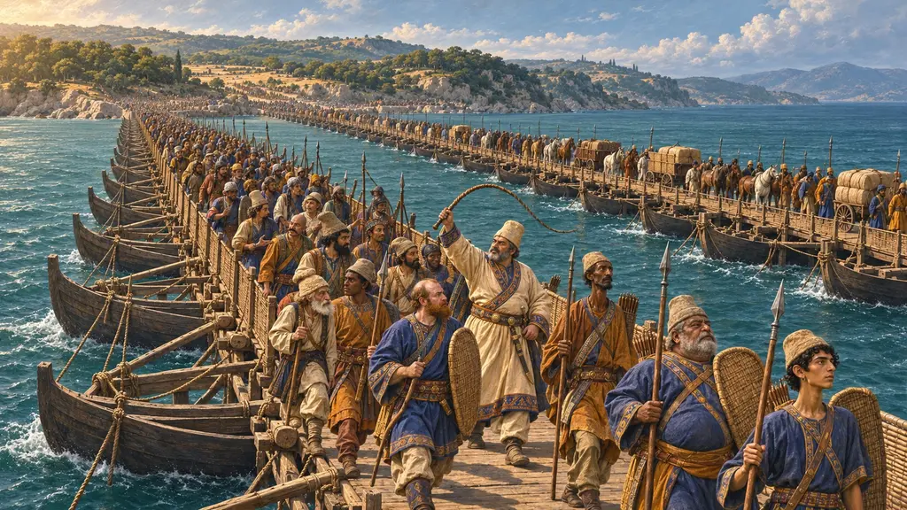
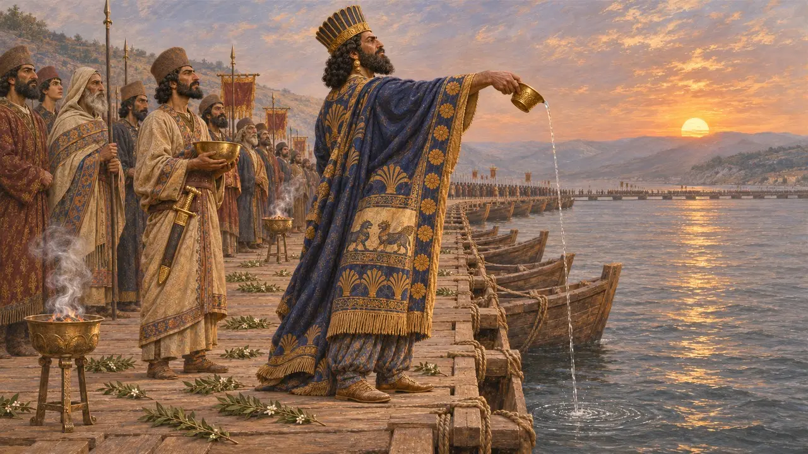
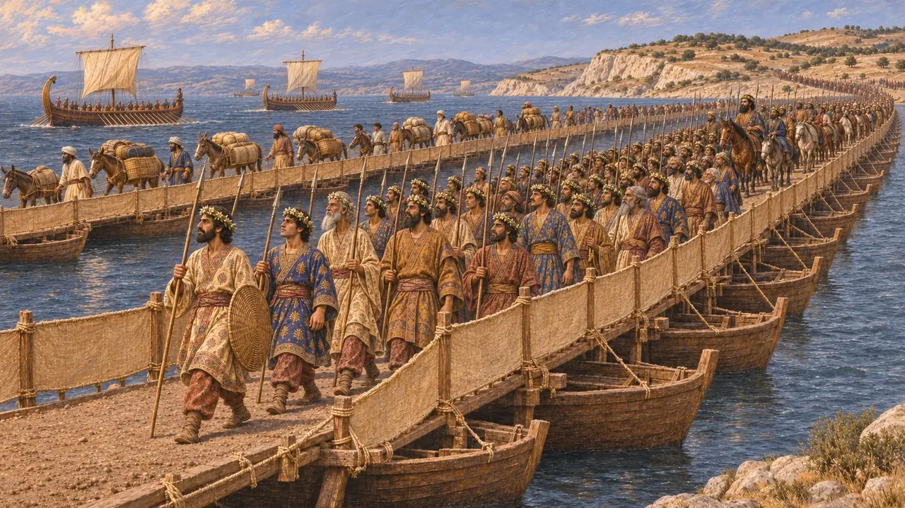
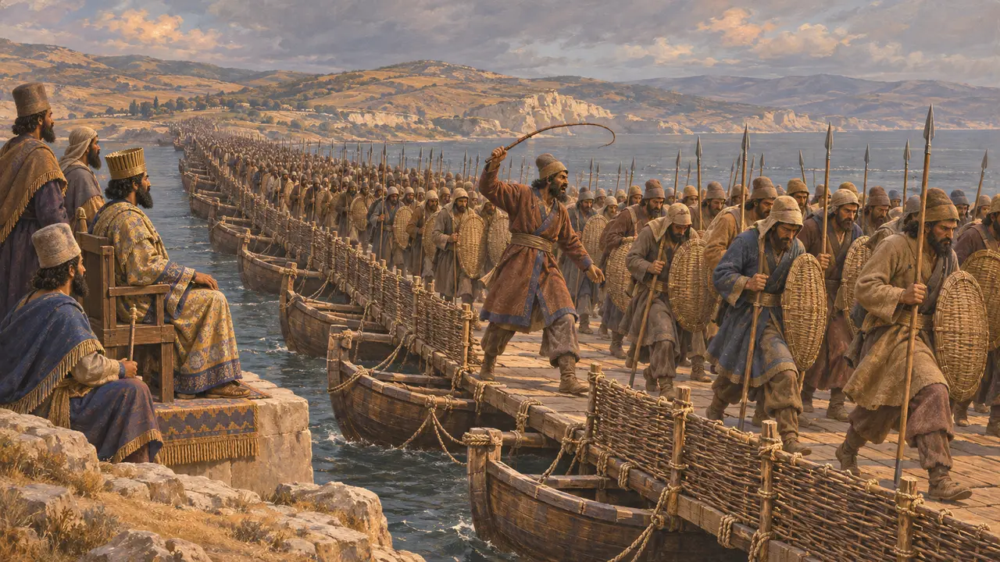
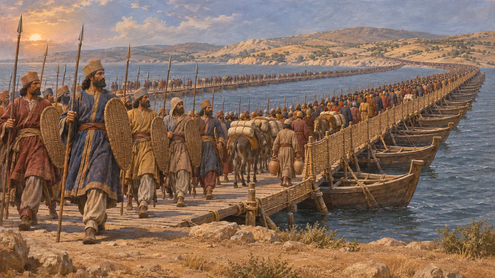
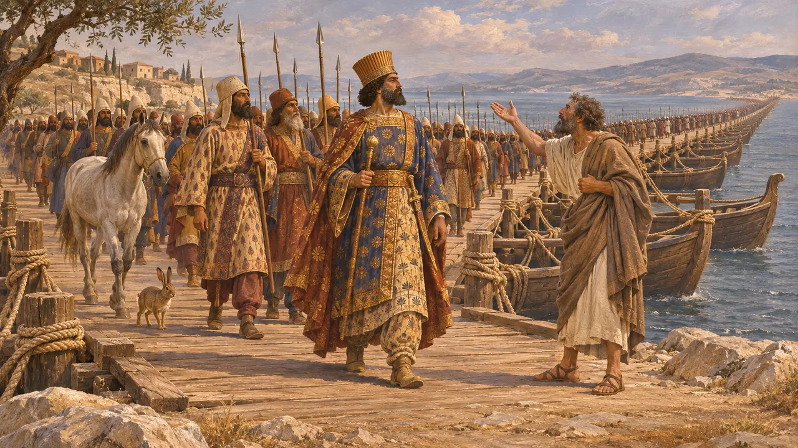

Encyclopedia › Battles and events

The crossing of the Hellespont
Xerxes' army passes from Asia into Europe near Abydos, 480 BCE
In the game: Level 9: The Canal, Level 10: The Hot Gates
In 480 Xerxes led his army across the Hellespont, the narrow strait between Asia and Europe, on two bridges of boats built from Abydos to the European shore. Herodotus describes ordered rites and a set order of march, then a crossing that went on for seven days and nights. It carried the King's host into Europe for the march on Greece, and Greek writers later made the bridging a symbol of royal pride.
In the game: The game marks the crossing as an event of 480 and repeats Herodotus's seven days and nights under the lash. That figure is his report, not a Persian record, and the size of the army that crossed is still argued.

Rites at sunrise
Ancient accountHerodotus says that before dawn incense was burned on the bridges and the roadway strewn with myrtle. At sunrise Xerxes poured a libation from a gold cup into the sea and prayed to the sun that nothing would stop him before he reached the far edge of Europe. He then threw the cup, a gold bowl and a Persian short sword into the water. Herodotus could not decide whether these were gifts to the sun or amends to the sea for its earlier whipping.
Herodotus 7.54

The order of march
Ancient accountHerodotus says the foot and horse used the bridge nearer the Black Sea, and the baggage animals and servants the one nearer the Aegean. First came the Ten Thousand Persians wearing garlands, then the mixed host of many peoples. Next day came horsemen and spearmen with their spear-points turned down, the sacred horses and chariot, and then the King with his guards. The fleet crossed at the same time, and he records a report that Xerxes went over last.
Herodotus 7.55

Seven days under the lash
Ancient accountHerodotus states that Xerxes watched the army cross under whips, and that it took seven days and seven nights without any rest. He uses the same image of men driven by the lash for the digging of the Athos canal and for the fighting at Thermopylae. In his history it helps set the King's subjects against Greeks who fought by choice, though whips may also simply have kept order on a crowded crossing.
Herodotus 7.56; Herodotus 7.22; Herodotus 7.223

How large was the army
DisputedHerodotus reports 1,700,000 foot soldiers counted at Doriscus and over five million people in all with the followers. Historians reject these figures as greatly exaggerated. Modern estimates vary widely, mostly from several tens of thousands to a few hundred thousand fighting men. Some, such as Maurice, have used the crossing time and the water supply on the route to estimate the force. No Persian document records the crossing or the army's size.
Herodotus 7.60; Herodotus 7.186; F. Maurice, The size of the army of Xerxes in the invasion of Greece, JHS 1930; J. F. Lazenby, The Defence of Greece 490-479 BC, 1993

Bridging the sea as pride
Later legendIn Aeschylus's Persians of 472, the ghost of Darius condemns his son for chaining the sacred Hellespont, an offence against the gods. Herodotus adds a local man who, seeing Xerxes cross, asked Zeus why he had taken the form of a Persian to destroy Greece. He also tells of a mare that gave birth to a hare, an omen he says was easy to read as a sign of a proud march and a flight home. These are moral tales of pride before a fall, not records.
Aeschylus, Persians; Herodotus 7.56-57
Sources
- Herodotus 7.54-57
- Herodotus 7.33-36
- Aeschylus, Persians
- P. Briant, From Cyrus to Alexander, 2002
- J. F. Lazenby, The Defence of Greece 490-479 BC, 1993
- F. Maurice, The size of the army of Xerxes in the invasion of Greece, JHS 1930